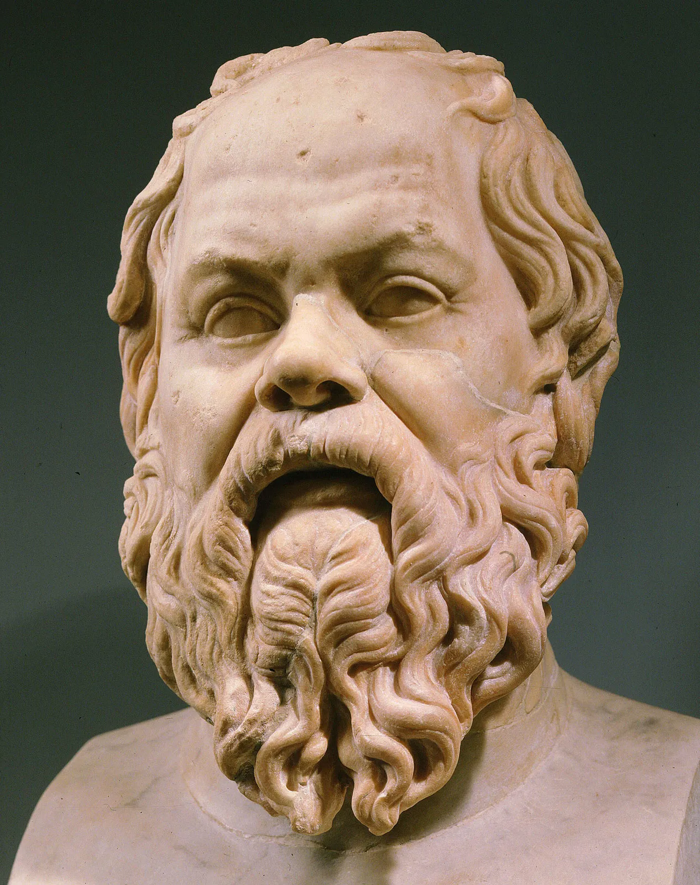

Socrates (c. 469-399 BC)

Socrates (c. 470 - 399 BCE) was one of the most influential philosophers of Ancient Greece. Born and raised in Athens, he became known for his questions about truth, morality, justice, and the meaning of a good life. His ideas and teaching methods had a lasting impact on Western philosophy, influencing later thinkers and shaping the way people approach knowledge and critical thinking.
Socrates did not write any philosophical works himself. Instead, much of what we know about his life and ideas comes from the writings of his students, especially Plato and Xenophon. He was famous for engaging people in conversations, asking questions that challenged their assumptions and encouraged them to examine their beliefs. This approach became known as the Socratic method. His unusual style of teaching and willingness to question powerful people made him a well-known but controversial figure in Athens. He was even portrayed humorously in Aristophanes' comedy The Clouds, which mocked his philosophical activities.
In 399 BCE, Socrates was brought to trial in Athens, accused of disrespecting the city's gods and corrupting its young people. He was found guilty and sentenced to death by drinking a poisonous substance, traditionally identified as hemlock. According to Plato's account in The Apology, Socrates defended his way of life and argued that questioning one's beliefs was essential to becoming wiser and living well. He refused to abandon his philosophical principles, even when faced with death.
Socrates' death made him a lasting symbol of intellectual courage and the pursuit of truth. His belief that people should examine their own lives and question what they think they know remains central to philosophy today. Through Plato and other writers, his ideas continued to influence generations of thinkers long after his death.
During his lifetime, Socrates was a well-known and controversial figure in Athens, often becoming the subject of jokes in comic plays. The most famous example is Aristophanes' The Clouds, performed in 423 BCE. In this comedy, Socrates is presented as a thinker interested in language, nature, and unconventional ideas. However, the play was written to entertain its audience rather than provide an accurate account of his character and beliefs. It also connects Socrates with ideas that some Athenians considered dangerous, including the rejection of traditional religious beliefs. In Plato's Apology, Socrates himself criticizes this portrayal, arguing that such representations helped create a misleading public image of him.
After Socrates' death in 399 BCE, several of his followers began writing works to preserve his memory and explain his philosophical ideas. These writings often presented him through conversations in which he questioned other people, challenged their assumptions, and examined different arguments. His discussion partners included ordinary citizens, students, politicians, and other intellectuals. Many of these early works have been lost, but important accounts survive in the writings of Plato and Xenophon, both of whom also recorded versions of his defence at trial in works titled Apology of Socrates.
Although these writings are essential for understanding Socrates, they should not always be treated as exact records of conversations that took place. Plato and Xenophon wrote their works with different purposes and perspectives, and scholars cannot be certain that every statement attributed to Socrates was spoken exactly as recorded. Nevertheless, their accounts offer valuable insight into his questioning method, his interest in moral and philosophical problems, and his belief that people should examine their ideas rather than accept them without reflection.